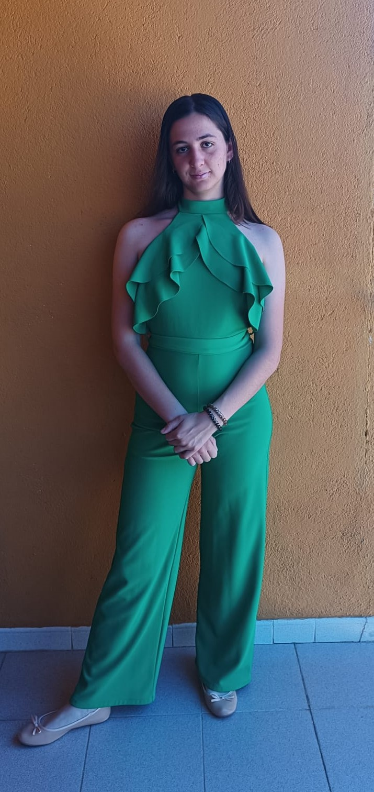

SOY LARA GONZALEZ CARRANCO
TÉCNICO DE DESARROLLO DE APLICACIONES WEB EN 2025
LA ACTUALIDAD SIGO CURSANDO ESTE CURSO EN DAW2 POR REPETIR, ME ENCANTA DESARROLLAR APLICACIONES PARA MOSTRARSE LAS A LA GENTE Y PODER DIVERTIRME.
Y ESPERO QUE PARA EL AÑO QUE VIENE PUEDA HABER TERMINADO ESTE CURSO
SOY DE UN PUEBLO DE ÁVILA , EL TIEMBLO Y VOY TODOS LOS DIAS A ESTUDIAR A ÁVILA EN AUTOBUS .
AQUI ES DONDE SE NOTA LO MUCHO QUE ME GUSTA ESTUDIAR.
